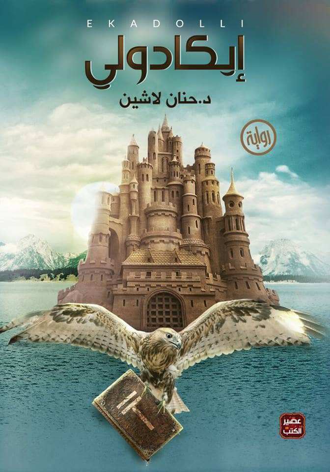

ملخص: تدور أحداث الرواية عن صراع بين الخير و الشر؛ في أرض انتزعت منها الرحمة و تحتاج الى الأمانة و الموعظة الحسنة يذهب أنس عبر الزمن في رحلة خيالية لإتمام المهمة

هناك روايات مرتبطة مثل:
اوبال
سقطرى
كويكول
978-9953891718
الرمز المفقود
12000 ل.س
الناشر: دار الساقي
تصنيف الكتاب: رواية بوليسية
ملخص: تتم دعوة أستاذ علم الرموز في جامعة هارفرد "روبرت لانغدون ،في اللحظة الأخيرة لإلقاء محاضرة مسائية في في مبنى الكابيتول ولكن،و بعد لحظات من وصوله،يتم اكتشاف شيء مثير للاضطراب في وسط قاعة "الروتوندا ،شيئء تم تشفيره على نحو مروع بخمسة رموز غامضة
روايات مرتبطة
شيفرة دافنشي
الجحيم
948-9953894868
قواعد جارتن
33000 ل.س
الناشر:دار المعارف
تصنيف الكتاب: رواية خيال علمي
ملخص: تدور أحداث الرواية حول بلد خيالي اسمه {جارتن} و يقول كاتب الرواية أن طوفان بحر {أكما} تسبب بزواله ، بعد هذه الحادثة بسنوات طويلة انحسرت مياه البحر و ظهرت البلد ، و من ثم بدء الشعب الذي يقطنه و الذي ينقسم الى قسمين بإعماره، وفي ظل قواعد و قوانين صارمة قد تصل لحد الإعدام لمن يتجاوزها ، فضلاً عن الصراع الدائر بين هاتين الطبقتين
روايات مرتبطة
ارض زيكولا
اماريتا
فتاة الياقة الزرقاء
158-9953756318
السلام عليك يا صاحبي
19000 ل.س
الناشر: الدار العربية للغات
تصنيف الكتاب: أدب ديني
ملخص: ."يتحدث الكتاب عن الأنبياء عليهم السلام و عن مواقف بعض الصحابة ، "السلام عليك يا صاحبي ، تسألني عن السعادة فتقول :متى أصل إليها؟ فأقول لك : السعادة ليست محطة تصل إليها،و إنما طريق تمشي فيه
روايات مرتبطة
حديث الصباح
نبض
ليطمئن قلبي
238-9926489218
11:11
15000 ل.س
الناشر: دار العربية للعلوم
تصنيف الكتاب: رواية خيالية
ملخص: . يكشف الكتاب معتقدات بواسطة الساعة 11:11. هذه المعتقدات تتعلق بتحقيق الأمنيات. رواية توضح تأثير هذه الإيمان على حياة الشخصيات الرئيسية.حيث أنشأت أجواء خيالية وعاطفية تأسر قلب القارئ إليها
روايات مرتبطة
مليون خاطر
من لهيب الشوق
738-4962191718
في قلبي أنثى عبرية
20000 ل.س
الناشر: دار التقوى
تصنيف الكتاب: رواية خيالية
ملخص:.تعرض الرواية علاقة المسلمين بغيرهم و خاصة اليهود،كما تعرض بغض الفروقات بين المرآة المسلمة و المرآة اليهودية ، "هل تعلمين أن الناس لا يعرفون عنا سوى نهاياتنا ؟ عندما نموت نصبح رمزاً للجهاد و المقاومة.